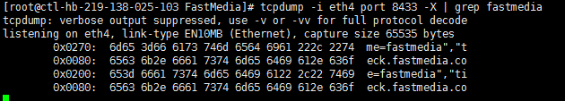
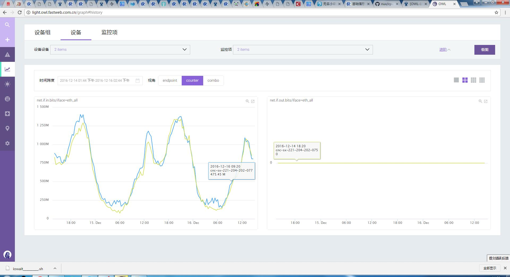

驗証與除錯
當 plugin script 上傳並且布署成功之後，需要做一系列的驗証工作。
在機器上手動執行 script ，利用
python 輔助，肉眼檢查。下指令：
60_traffic.sh | python -mjson.tool 可以將 plugin script 的輸出變成容易閱讀的格式。用繪圖、看圖的方式來驗証


如果發現，沒有畫出圖，例如說，線段沒有出現，或是值並不正常。就要進行更進一步的驗証。如果懷疑上報異常，透過
tcpdump 來做驗証。需要下的指令是
tcpdump -i 網卡名 -X port 8433- 如果可以在
tcpdump 的輸出看到數值有上報，那就是 plugin 有執行成功，且有上報到 open-falcon 的 transfer 模組。 - 如果無法在
tcpdump 的輸出看到數值有上報，那就是 plugin 沒有執行成功，應該要看 agent 的 log 來做驗証、除錯。 - 可以透過按
Ctrl + C 來結束 tcpdump
- 如果可以在
透過 agent 的 log 來做驗証、除錯
- 首先要先設法找出 agent 所在的目錄：下指令
ps aux | grep falcon-agent 以取得 process id - 然後下指令
cat /proc/$pid/environ 如此就可以看出 falcon-agent 所在的目錄，$DIR_OF_AGENT。 tail -f $DIR_OF_AGENT/var/app.log- 可以透過按
Ctrl + C 來結束 tail -f
典型的錯誤有可能長成這樣子：
time="2016-12-06T13:08:28+08:00" level=error msg="json.Unmarshal stdout of plugin/FastMedia/60_fastmedia_worker_process.sh fail. error:invalid character ',' looking for beginning of value stdout: \n[{ \"endpoint\" : \"ctl-hb-219-138-025-103\", \"tags\" : \"\", \"timestamp\" : 1481000908, \"metric\" : \"fastmedia.worker.process\", \"value\" : , \"counterType\": \"GAUGE\", \"step\" : 60}]\n\n"- 首先要先設法找出 agent 所在的目錄：下指令
常見的異常排除
已經成功布署插件的機器 (host)，有的有出現插件的監控項，有的卻沒有。如圖

這種情況最有可能的原因，應該是因為部分機器 (host) 的主機群 (hostgroup) 沒有正確的設置。因為插件 (plugin script) 的啟用，是將插件所在資料夾，綁定到 hostgroup 而啟用的。
解決方式：檢查沒有出圖的機器所屬的 hostgroup 是否正確。
某成對 (paired) 監控項，一個有圖、另一個卻沒有。如圖： 
所謂成對 (paired) 的監控項，是指某些監控項的資料來源一樣、採集方式相同的監控項。如果成對的監控項一個有資料、另一個都是 0 ，這種情況比較高的機率是監控項的採集出問題。一般而言，無論是「內建監控項」或是「自訂監控項」，通常都是去讀取 linux 的系統指令輸出或是系統檔
/proc/*的內容。以
net.if.in.bits和net.if.out.bits為例子，它們的資料來源是/proc/net/dev。所以可以利用下列的指令，監看資料來源的每秒的變動來除錯。watch cat /proc/net/dev